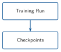
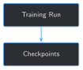

import sys
from pathlib import Path
BOOK_ROOT = Path(__file__).resolve().parents[2]
sys.path.insert(0, str(BOOK_ROOT / "code" / "chapter_02"))
sys.path.insert(0, str(BOOK_ROOT / "code" / "chapter_06"))
sys.path.insert(0, str(BOOK_ROOT / "code" / "chapter_07"))
from build_training_examples import HELD_OUT_REPORT
from data_quality_gate import FULL_SET_DIR
from format_training_chunks import build_timeline_examples_for_report, build_training_set_at_scale
examples, skipped, artifacts_filtered = build_training_set_at_scale()
held_out_examples, _ = build_timeline_examples_for_report(FULL_SET_DIR / HELD_OUT_REPORT)
print(f"{len(examples)} training examples, {len(held_out_examples)} held-out examples")8 Fine-Tuning at Scale with Checkpointing and Experiment Tracking


Progress ████████░░░░░ 8 / 13 · Estimated time: 45-60 min · Difficulty: 🟠 Intermediate
8.1 Learning objectives
By the end of this chapter, you will be able to:
- Fine-tune on Chapter 7’s full 669-example training set instead of Chapter 5’s 16, and explain why that changes what “just rerun it” actually costs
- Save a checkpoint every epoch, and log training metrics to a plain CSV/JSONL file you can open in any spreadsheet
- Simulate a real crash and resume training purely from a saved checkpoint on disk — not from anything still sitting in memory
- Explain why this chapter’s held-out check still splits by report, not by individual training example, and what would go wrong if it didn’t
8.2 Operational Problem
Mike, the completions engineer who asked in Chapter 5 whether fine-tuning teaches the operation or just memorizes flashcards, has a more practical worry now that the training set has grown from 16 examples to 669: “If this run takes half an hour and the laptop goes to sleep at minute twenty-five, did we just lose the whole thing?”
Chapter 5’s script had no answer to that question, because at 16 examples and 5 minutes, it never needed one. At this scale, it does.
8.3 Example: a run directory after training
NoteWhat a run directory looks like on disk
checkpoints/chapter_08/run_20260815_142824/
├── checkpoint_1/
│ ├── adapter_config.json
│ └── adapter_model.safetensors
├── checkpoint_2/
│ ├── adapter_config.json
│ └── adapter_model.safetensors
├── checkpoint_3/
│ ├── adapter_config.json
│ └── adapter_model.safetensors
├── metrics.csv
└── metrics.jsonlEvery one of those files exists independent of the training process — delete the terminal, close the laptop, come back tomorrow, and everything needed to resume or inspect this run is still sitting on disk exactly as it was.
8.4 Theory
TipEngineering Translation: checkpoint
A checkpoint is a saved snapshot of the adapter’s weights at one point in training — like a documented casing point during a long run, somewhere you could pick back up from if something interrupted the job, instead of starting over from the surface. This chapter saves one after every epoch — Chapter 5’s term for one full pass through the entire training set, all 669 examples once.
TipEngineering Translation: experiment tracking
Experiment tracking means recording what happened during training — loss, epoch, timestamp, which checkpoint — as it happens, not just remembering the final number. A CSV file with one row per epoch is experiment tracking; it doesn’t need to be a dashboard to count.
8.5 Why not just rerun Chapter 5’s script on more data?
Chapter 5’s first_lora_finetune.py would technically work if you just handed it Chapter 7’s 669 examples instead of 16 — nothing about the LoRA mechanics changes. What breaks is everything around it. Chapter 5’s run took about 5 minutes; at 669 examples, one epoch alone takes several minutes, and this chapter trains for multiple epochs. A script with no checkpointing that crashes 90% of the way through a 30-minute run loses all 90%. A script that only prints a final loss number gives you nothing to look at if training goes wrong at epoch 2, not epoch 3. Scale doesn’t just mean “more of the same” — it means a training run becomes something you have to be able to interrupt, inspect, and resume.
8.6 Implementation
8.6.1 Step 1: Load Chapter 7’s training set and hold out by report
8.7 What problem are we solving?
Get the same 669 training examples and the same single held-out report Chapter 2 reserved — reusing both, not rebuilding either.
8.8 Inputs
- Chapter 7’s
build_training_set_at_scale() - Chapter 2’s
HELD_OUT_REPORT(Drilling_037)
8.9 Expected Output
669 training examples; the held-out report’s own timeline entries, built separately.
Running this exact code prints:
669 training examples, 8 held-out examples8.10 What just happened?
Nothing about the split changed from Chapter 2 — Drilling_037 is excluded from examples at the report level, the same way it always has been, and its own timeline entries are built separately for held_out_examples. That’s deliberate: if even one chunk of report #37 had ended up in examples while others stayed in held_out_examples, the held-out check would be partly grading the model on a report it did train on — a leak Chapter 7’s per-report exclusion prevents by construction, not by carefully remembering to check.
8.11 Production Reality
A single held-out report gives 8 examples to check against — informative, but a small sample. Chapter 11 builds a proper evaluation harness over more held-out data; this chapter’s job is getting checkpointing and tracking right, not maximizing eval statistical power yet.
8.11.1 Step 2: Checkpoint every epoch, log every epoch
8.12 What problem are we solving?
Save the adapter’s weights after every epoch, and record what happened during that epoch, so a long run leaves behind both recoverable state and a visible history — not just whatever’s still in memory when it finishes (or doesn’t).
8.13 Inputs
- A LoRA-wrapped model (Chapter 5’s
build_lora_model) - The training examples and held-out examples from Step 1
8.14 Expected Output
One checkpoint_N/ directory and one new row in metrics.csv per epoch.
import csv
import json
import time
import torch
from baseline_prompting import run_baseline
from first_lora_finetune import build_training_ids, score
LEARNING_RATE = 2e-4
def save_checkpoint(lora_model, run_dir, epoch):
checkpoint_dir = run_dir / f"checkpoint_{epoch}"
lora_model.save_pretrained(checkpoint_dir)
return checkpoint_dir
class MetricsLogger:
FIELDS = ["step", "epoch", "train_loss", "held_out_exact_match", "checkpoint"]
def __init__(self, run_dir):
self.csv_path = run_dir / "metrics.csv"
self.jsonl_path = run_dir / "metrics.jsonl"
self._rows = []
def log(self, **kwargs):
self._rows.append({field: kwargs.get(field, "") for field in self.FIELDS})
self._write()
def _write(self):
with self.csv_path.open("w", newline="", encoding="utf-8") as f:
writer = csv.DictWriter(f, fieldnames=self.FIELDS)
writer.writeheader()
writer.writerows(self._rows)
with self.jsonl_path.open("w", encoding="utf-8") as f:
for row in self._rows:
f.write(json.dumps(row) + "\n")
def fine_tune_epoch(lora_model, tokenizer, examples, optimizer):
lora_model.train()
epoch_loss = 0.0
for example in examples:
input_ids, labels = build_training_ids(tokenizer, example)
loss = lora_model(input_ids=input_ids, labels=labels).loss
loss.backward()
optimizer.step()
optimizer.zero_grad()
epoch_loss += loss.item()
lora_model.eval()
return epoch_loss / len(examples)
def train_with_checkpoints(lora_model, tokenizer, examples, held_out_examples, run_dir, logger, num_epochs, start_epoch=0):
optimizer = torch.optim.AdamW(lora_model.parameters(), lr=LEARNING_RATE)
for i in range(num_epochs):
epoch = start_epoch + i + 1
avg_loss = fine_tune_epoch(lora_model, tokenizer, examples, optimizer)
checkpoint_dir = save_checkpoint(lora_model, run_dir, epoch)
matched, total = score(run_baseline(lora_model, tokenizer, held_out_examples))
logger.log(step=epoch * len(examples), epoch=epoch, train_loss=round(avg_loss, 4), held_out_exact_match=f"{matched}/{total}", checkpoint=checkpoint_dir.name)
print(f" epoch {epoch}: avg loss {avg_loss:.4f}, held-out {matched}/{total} -> {checkpoint_dir.name}")Running two epochs against the real training set prints:
epoch 1: avg loss 2.7550, held-out 0/8 -> checkpoint_1
epoch 2: avg loss 2.1636, held-out 0/8 -> checkpoint_28.15 What just happened?
Every epoch now leaves two things behind on disk: a checkpoint_N/ directory holding that epoch’s adapter weights, and a new row in metrics.csv recording the loss and held-out score at that point. Neither depends on the training process still being alive — both are just files, readable by anything, including a spreadsheet.
8.16 Production Reality
A production setup might stream these same rows to TensorBoard, Weights & Biases, MLflow, or an internal dashboard instead of a flat file — any of those add real value at bigger scale (live plots, comparing many runs, alerting). A CSV is the right starting point here: it’s transparent, it’s portable, and it needs nothing installed beyond Python’s own csv module to read or write.
8.16.1 Step 3: Simulate a crash, then resume from disk alone
8.17 What problem are we solving?
Prove the checkpoints from Step 2 are actually sufficient to recover from — not just files that happen to exist, but files a genuinely fresh process can resume real training from.
8.18 Inputs
- A checkpoint directory from Step 2
- A freshly (re-)loaded base model — not the one already in memory
8.19 Expected Output
Training resumes from the saved epoch, and the loss continues falling from where it left off rather than restarting from scratch.
from peft import PeftModel
def load_checkpoint(model, checkpoint_dir):
return PeftModel.from_pretrained(model, checkpoint_dir, is_trainable=True)
del model, lora_model
model, tokenizer = load_model_and_tokenizer(MODEL_NAME) # a genuinely fresh load
lora_model = load_checkpoint(model, run_dir / "checkpoint_2")
train_with_checkpoints(lora_model, tokenizer, examples, held_out_examples, run_dir, logger, num_epochs=1, start_epoch=2)
sample_after = score(run_baseline(lora_model, tokenizer, training_sample))
held_out_after = score(run_baseline(lora_model, tokenizer, held_out_examples))
print(f"Training sample recall (50 examples): {sample_after[0]}/{sample_after[1]}")
print(f"Held-out generalization: {held_out_after[0]}/{held_out_after[1]}")Running this exact code prints:
Resuming training, epoch 3...
epoch 3: avg loss 1.8211, held-out 0/8 -> checkpoint_3
Training sample recall (50 examples): 0/50
Held-out generalization: 0/88.20 What just happened?
del model, lora_model followed by loading the base model again from scratch is this chapter’s stand-in for a real crash and restart — nothing about the previous training process survives except what got written to checkpoint_2/. PeftModel.from_pretrained reads the adapter weights back from that directory onto the fresh model, and training continues from there. The loss keeps falling after the resume — 2.1636 → 1.8211 — not jumping back up to where it started, direct evidence the resume picked up real progress, not just a fresh start with an optimistic label.
The recall numbers are worth sitting with, though, because they’re not what Chapter 5 trained you to expect. Chapter 5’s 16-example run went from 0/16 to 13/16 training recall in 20 epochs. This chapter’s 669-example run, after 3 epochs, is still 0/50 on its training sample — loss fell by more than a third, and exact-match recall hasn’t moved at all. Both results are real; they’re not in tension. Chapter 5’s tiny, repetitive dataset let the model start reproducing exact answers quickly. This chapter’s dataset is over 40 times larger and far more varied — three passes through it is proportionally much less repetition per example than twenty passes through sixteen examples was. The loss curve says the model is learning something real about this archive’s language and structure; it just hasn’t reached the point of reproducing exact wording yet. That’s a genuinely different, and genuinely useful, thing to have measured — a loss number alone would have told you training was “working” without telling you it wasn’t yet memorizing, and exact-match alone would have told you nothing was happening at all when something clearly was.
8.21 Production Reality
This chapter’s resume restores the adapter’s weights from disk, but not the optimizer’s internal state (Adam’s per-parameter momentum estimates) — that state lived only in memory and is gone after the simulated crash, same as it would be after a real one. A production resume would also checkpoint and restore optimizer state for a more seamless continuation; this simpler version accepts a small, honest discontinuity in exchange for not doubling every checkpoint’s size and complexity.
8.22 Practical exercise
🟢 Beginner
Try it yourself: run python code/chapter_08/finetune_at_scale.py from inside book/ (it takes about 30-35 minutes on CPU), then open the newly created checkpoints/chapter_08/run_<timestamp>/metrics.csv in a spreadsheet application and watch train_loss fall epoch over epoch.
You’ll know it worked when: you can find 3 checkpoint_N/ directories on disk, metrics.csv has 3 rows, and you can point to exactly which row corresponds to the epoch that ran after the simulated crash.
8.23 Field notes
WarningField notes: the model learned the accent before the facts
Query: three different training-sample questions, each about a different report and time window, checked against checkpoint_3.
Result:
| Report / window | Expected | Model said |
|---|---|---|
#2, 06:00–08:00 |
"No Activity" |
"Production Casing Run Csg & Cement Rig up casing" |
#4, 07:30–17:00 (part 3) |
"...Rig floor is 50% rigged up..." |
"Production Casing Run Csg & Cement Rig up casing" |
#7, 06:00–07:00 |
"Rig Move In Rig Up & Tear Down No activity" |
"Production Casing Run Csg & Cement Rig up cement" |
Why: all three questions are about genuinely different reports and time windows, with genuinely different correct answers — but the model gives back almost the identical phrase each time, just barely varied. "Production Casing", "Rig up", "Cement" are real, common terms across this archive’s PHASE/CODE labels; after 3 epochs, the model has learned that this kind of question gets answered with that kind of phrase, without yet learning which specific phrase belongs to which specific report.
Lesson: fine-tuning at this stage doesn’t fail randomly — it learns the domain’s accent before it learns the domain’s facts. That’s a genuinely different failure mode than Chapter 5’s “confidently borrows a different report’s real answer,” and it’s exactly the kind of detail a single final loss number would hide completely.
8.24 Challenge exercise
🟠 Intermediate
Challenge: prove a saved checkpoint is genuinely self-sufficient — reload the base model completely fresh, load checkpoint_1 from the most recent run with no other state carried over, and confirm its held-out score matches what metrics.csv logged for that exact epoch. A reference solution is at code/chapter_08/challenge/challenge.py — on a real run, it reloads a completely fresh model, loads checkpoint_1 with no other state carried over, recomputes 0/8 on the held-out report, and confirms that matches metrics.csv’s logged value for epoch 1 exactly.
8.25 Key takeaways
- Scale changes what a training script needs to survive, not just how long it takes to run. A crash 25 minutes into a 30-minute run with no checkpointing costs you the whole 25 minutes.
- A checkpoint is only as good as its ability to resume training on a genuinely fresh process — this chapter proved that directly by deleting the in-memory model and reloading from disk before resuming.
- Experiment tracking doesn’t require a dashboard. A CSV with one row per epoch — step, loss, held-out score, checkpoint name — is transparent, portable, and already useful.
- Falling loss and rising exact-match recall are different signals, and they don’t have to move together: this chapter’s loss fell by more than a third across 3 epochs while training-sample recall stayed at
0/50. Watching only one of them would have hidden real information the other one caught. - The held-out split still happens at the report level, exactly as it has since Chapter 2. At this scale that matters more, not less: more training examples means more chances for a sloppier split to leak a few of the wrong ones across the boundary.
8.26 Repository files
| File | Purpose |
|---|---|
code/chapter_08/finetune_at_scale.py |
Fine-tunes on Chapter 7’s full training set with checkpointing and CSV/JSONL metrics logging |
code/chapter_08/challenge/challenge.py |
Reference solution: verifies a checkpoint reproduces its own logged score |
checkpoints/chapter_08/run_<timestamp>/ |
Generated checkpoints and metrics (not committed — regenerate by running the script) |
notebooks/chapter_08_explore.ipynb |
Interactive companion notebook |
CautionCHECKPOINT — Chapter 8
Tip✓ WHAT YOU BUILT
finetune_at_scale.py — fine-tunes on Chapter 7’s 669-example training set with per-epoch checkpointing to checkpoints/chapter_08/run_<timestamp>/ and metrics logged to metrics.csv/metrics.jsonl, and survives a simulated mid-training crash by resuming purely from a saved checkpoint. Chapter 9 builds on this fine-tuned model directly.
8.27 What can you do now that you couldn’t do before?
You can run a fine-tuning job long enough that a crash partway through would actually matter, and trust that it can pick back up from exactly where it left off — with a plain, inspectable record of what happened at every step along the way, not just a final number.
8.28 Suggested next step
Coming up in Chapter 9: this fine-tuned model has now learned this archive’s language, formatting, and shorthand at real scale — but it still can’t cite which report an answer came from, and Chapter 3 already showed fine-tuning alone isn’t the right tool for exact, source-grounded fact lookup. Chapter 9 combines this chapter’s fine-tuned model with retrieval, so an answer can be both fluent in the domain and traceable back to a specific report.